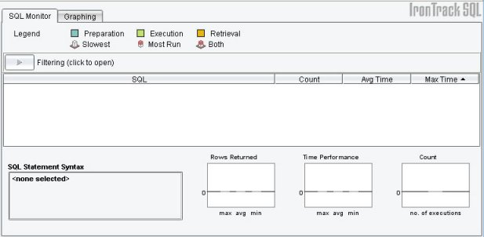
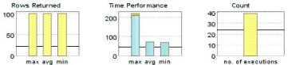
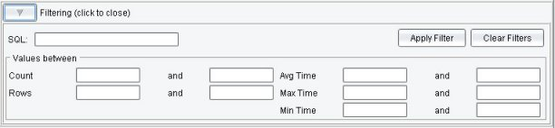

Using the SQL Monitor Section
From the SQL Monitor section of IronTrack SQL, you can view the
SQL statements initiated by your application and determine how often
they are executed, the average time they take to execute, and the
maximum amount of time they take to execute.
From this document, you can access the following information:
Interface Elements of the SQL Monitor Section
The SQL Monitor section of IronTrack SQL includes an intuitive
interface to help you analyze and monitor the SQL statements generated
by your application. The interface enables you to view information in
multiple ways. The following image illustrates the main elements of the
SQL Monitor section:

The SQL Monitor user interface includes the following sections:
- Legend — Displays a legend that illustrates how to
interpret the performance of the highlighted row. For more information,
see the legend
section of Determining Statement Performance.
- Filtering — Provides a way for you to filter out
specified SQL statements in the SQL statement table. For more
information, see Filtering the
List of SQL Statements.
- SQL statements — Displays the SQL statements generated
by your application and the corresponding performance elements
IronTrack SQL measures. For more information, see The SQL Statement Table.
- SQL Statement Syntax — Displays the full text
highlighted SQL statement. (This text can be copy from the section and
pasted elsewhere, if necessary.)
- Monitoring graphs — Displays performance of the
highlighted SQL statement in graphic form. For more information, see
the graph
section of Determining Statement Performance.
The SQL Statement Table
After your application has populated the user interface with
query results, the SQL statement table displays the SQL statements that
have completed execution. The table includes the following information
about each statement:
- SQL — Displays the SQL statements that were run.
- Count — Displays the number of times a SQL
statement has run since the last time the server was purged.
- Avg Time — Displays the average time a SQL
statement took to complete, in milliseconds.
- Max Time — Displays the maximum time a SQL
statement took to complete, in milliseconds.
Visual Cues in the SQL Monitor Section
IronTrack SQL provides the following visual cues to quickly
assess the performance of your SQL statement execution:
- Legends
- Colors
- Icons
- Graphs
The legend, which is located beneath the menu bar, provides quick
visual cues about the execution of your statements.

The colors in the top portion of the legend represent each phase
of execution in the highlighted row, and provide a way for you to
visually determine the amount of time required to prepare, execute, and
retrieve data for a particular SQL statement. The following colors
display in each column of the SQL statement table and in the graphs.
- Preparation
— Represents the amount of time to prepare the statement.
- Execution
— Represents the amount of time to execute the statement.
-
Retrieval — Represents the amount of time to retrieve the
data.
The following icons, listed in the legend, appear on the
left-hand side of certain SQL statements
-
Slowest — The SQL statements that run most slowly.
 Most Run — The SQL statements run most often.
Most Run — The SQL statements run most often.-
Both — The slowest SQL statements that run most often.
These icons represent the top ten percent of SQL statements
running most slowly, most often, or both. You can use the icon legend,
when viewing SQL statements in the SQL statement table to quickly
determine potential bottlenecks.
Three graphs display at the bottom of the interface, using the
colors also represented in the legend bar.

As you select an SQL statement from the table, the details
display in the SQL Statement Syntax text boxes. This data is then
graphically represented in the graphs on the right, as follows:
- Rows Returned — Displays the maximum, average,
and minimum rows returned that match the selected SQL statement.
- Time Performance — Displays the maximum, average,
and minimum completion times for the selected SQL statement.
- Count — Displays the number of times the selected
SQL statement has run since the last time the server was purged.
A horizontal line in each graph indicates the value compared to
the system average.
Specifying the Columns That Appear in the SQL Statement Table
You can change which columns appear in the SQL statement table.
To specify which columns will and will not appear in the SQL
statement table
- Select View -> Configure columns to display the Columns
dialog.
- Select the check boxes to the left of the columns to appear in
the SQL statement table; deselect the check boxes to not appear.
- Click on the OK button to return to the SQL
Monitor section.
The system implements your selections and displays accordingly.
Specifying the Order in Which Columns Appear in the SQL
Statement Table
You can change the order in which the columns in the SQL
statement table appear.
To change the order of the columns
- Click and hold the mouse pointer on the column heading to
move.
- Drag the column horizontally to the new position in the SQL
statement table.
- Release the mouse button to display the new order for the
columns.
Specifying the Types of Statements That Appear in the SQL
Statement Table
You can view the results of your SQL queries on the following
ways:
- All queries — Shows the results of every SQL statement
executed by your application.
- Prepared statements — Shows only the prepared statements
executed by your application.
- Bound variable — Shows the actual values of the SQL
statements that are passed through the prepared statements.
You can monitor the performance of your application's SQL
statements by changing the view to display only the prepared statements,
checking for the worst performing prepared statements, then changing the
view to display the statements that include bound variables.
Changing the View to Display Prepared Statements
To view only prepared statements, select View -> Show
Queries -> Prepared Statements. In the SQL statement table, IronTrack
SQL displays only the prepared statements executed by your application.
From there, you can determine which statements are performing
poorly. Then you can change the view to display the bound variables and
determine which specific inputs are performing poorly.
Changing the View to Display Bound Variables
To view bound variables, select View -> Show Queries ->
Bound Variables. In the SQL statement table, IronTrack SQL displays all
of the statements containing bound variables
From there, you can determine which statements are performing
poorly and take the appropriate action in your application. After you
have made changes to your SQL statements, you can run your application
against IronTrack SQL again and see where you have made improvements to
the efficiency of the statements.
Filtering the List of SQL Statements
You can filter the results that are displayed in the SQL
statement table, so that only the statements that are important to you
appear.
IronTrack SQL provides the following three types of filtering:
In general, to apply a filter to the SQL statement table
- Click on the Filter button to display the Filtering
section.

The filtering section lists the following elements on which you
can filter:
- SQL (statement type) — Can be an entire SQL
statement or any substring thereof.
- Count (value range) — Specifies the count or
count range on which to filter. The count is the number of times the
statement has run, since the last time the server was purged.
- Rows (value range) — Specifies a row or range of
rows on which to filter, based on the number of rows returned by a
query.
- Avg Time (value range) — Specifies the average
time on which to filter, in milliseconds.
- Max Time (value range) — Specifies the minimum
time or maximum time period on which to filter, in milliseconds.
- Min Time (value range) — Specifies the minimum
time or maximum time period on which to filter, in milliseconds.
- Enter the criteria on which to filter.
- Click on the Apply Filter button to remove from view
all SQL statement results except those that meet the filter criteria.
SQL Statement Filtering
Using SQL statement filtering, you can filter the view based on
any or all elements of an SQL statement. SQL statement filtering
compares strings with the text of your SQL statement. For example, you
can filter on all SELECT or INSERT statements, or you can
filter on one of the tables that your statements access, or you can
filter on a specific column in a table.
To filter based on SQL statements
- Click the Filtering button to display the Filtering
section.
- In the SQL field, enter the text to match to the SQL
statements on which to filter.
- Click on the Apply Filter button to run the filter and
display the results in the SQL statement table.
- Click Clear Filter to clear the current filter, to
apply a new filter, or to view unfiltered data.
Note: SQL filtering does not support wildcards.
SQL Range Filtering
Using SQL range filtering, you can filter the view based on
values ranges for the columns in the SQL statement table that contain
results from the SQL statements that have been executed in your
application.
To filter using a range
- Click the Filtering button to display the Filtering
section.
- Enter numeric values in the fields of the Values
between area.
Note: You can enter either a starting value, an ending
value, or both; however, you are not required to enter both to apply a
filter.
- Click Apply Filter to run the filter.
The results of your filter display in the SQL Statement
table.
- Click Clear Filter to clear the current filter, to
apply a new filter, or to view unfiltered data.
Combination Filtering
To use both SQL filtering and value range filtering
- Click the Filtering button to display the Filtering
section.
- In the SQL Statement Syntax field, enter the text to
match to the SQL statements. For more information, refer to SQL Statement Filtering.
- Enter numeric values in the fields of the Values
between area. For more information, refer to SQL Range Filtering.
- Click Apply Filter to run the combined filter.
The results of your filter display in the SQL Statement
table.
Clearing Filters
To clear all filters from your data, click Clear Filters.
The unfiltered data displays.
Analyzing SQL Statement Performance with the SQL Monitor
Section
After you have become familiar with the elements that make up the
SQL Monitor section, you can begin using IronTrack SQL to analyze the
SQL statements your application executes.
Using IronTrack SQL, you can focus on improving the queries that
harm database performance the most. The following list describes some
improvements you can make, based on the types of problems that IronTrack
SQL helps discover:
- High preparation time — Queries that
require high preparation time may perform unnecessary activities in the
time between when a statement is initialized and when it is executed.
Consider moving any code related to building the SQL query before
creating the Statement object.
- Frequent queries — Consider queries that
are called frequently as candidates for data caching. Simple caching
strategies involve copying the RecordSet values into a
Collection object or using the CacheRowSet API described in this
article at JavaWorld: http://www.javaworld.com/javaworld/jw-02-2001/jw-0202-cachedrow_p.html.
Consider converting repeat queries of the same basic form to a
prepared statement. The Java PreparedStatement object gives the
database an opportunity to pre-parse the query, which can save time
when a query is called repeatedly.
Consider consolidating multiple queries of the same table into a
single statement. For example, your application may query the database
to retrieve a list of all IDs from a table, then loop through the list
to instantiate a bean for each ID. Each bean instantiation may, in
turn, require a separate query to the database. By changing the bean�s
constructor to allow for an alternative instantiation, you can
consolidate thousands of queries into a single query, reducing the
execution time significantly.
- High execution time — Time spent in the executeQuery()
or executeUpdate() methods is time that the database is spending
to process and execute the query. As a result, performance optimization
can be approached from two directions — from the application side
and the database side.
In the application, you can attempt to simplify queries to make
them easier for the database to interpret. If the query is repeatedly
called, converting the query to a prepared statement would lower the
cost of repeat query parsing. Also examine queries to consider if they
can be rewritten to avoid complex joins, or if the table design can be
re-analyzed to improve performance. Another execution bottleneck may be
database-layer scripts such as triggers and stored procedures. Strictly
speaking, executing a script in the database layer is sub-optimal for
two reasons:
- It requires CPU cycles on the most constricted resource.
- Script execution is not the strength of the database.
Run the programmatic code on the application layer rather than
the database, because compiled code will generally be faster and does
not take cycles away from the bottleneck resource. Alternatively,
consider rewriting the SQL or database script to improve its execution
time, for example, by using a compound or nested statement instead of
an iterative statement.
In the database, work with the database administrator to
investigate improvements to the database configuration such as adding
indexes, increasing the SQL parsing cache, optimizing disk I/O by
separating database tables from logs, and implementing
database-specific hinting mechanisms (for example, Oracle�s /*
*/ syntax) and idioms that improve the database query execution plan.
- High retrieval time — Retrieval time
includes all of the time spent returning records from the database to
the application. The primary drivers of this time are the number of
rows returned, and the amount of data in each row. Examine queries for
opportunities to limit the number of columns, rows, or both returned.
If the database stores large amounts of data in a table (such as
employee photos), returning the entire table using a SELECT *
statement may transfer an unnecessarily large amount of data across the
network. Consider returning fewer records, fewer columns, or both.
Also, consider whether all of the rows are needed at once, or if paging
can be used to download only the data needed for the current step in
execution.
To analyze your SQL statements using IronTrack SQL
- Start your application.
- Start IronTrack SQL.
- Begin running commands in the application that execute the SQL
statements to monitor. (The results of executing your SQL statements
will appear in the SQL statement table.)
- Change the view in IronTrack SQL to show only the prepared
statements.
— OR —
Filter the view to display only the statements that are important to
you.
- Check the status of the prepared statements to see which ones
appear to be running the least efficiently.
- Change the view in IronTrack SQL to show only bound variables.
- Check the status of the bound variables to see which ones
appear to be running the least efficiently.
- Export the results as a dataset.
- Make any necessary changes to your application code to improve
the efficiency of the SQL statements.
- Purge the existing results.
- Repeat the previous steps.
- Compare the most recent changes with the exported dataset to
see the improvements in SQL statement efficiency.